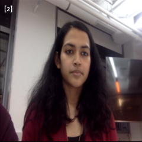
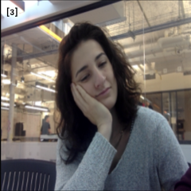
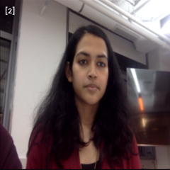
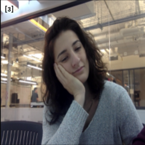

Sit straight
An teachable machine experiment which forces you to sit straight while watching
videos.
If you tilt your head or don't sit straight the video blurs out making it
impossible for you to watch the video unless you sit straight.
Adjust your position to the face marker & begin the experiment


 


